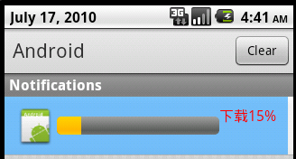

在Android的Notification中显示进度条
最近研究了Notification,参考了一些文档，写了一些心得。在官方文档中得知在Android的Notification中可以显示进度条，就想做个例子试一下。在网上查了下，没有找到。决定自己写下，费了九牛二虎之力搞定了，现在拿出与大家分享下:废话少说，上代码：
先自定义一个view
<?xml version="1.0" encoding="utf-8"?><LinearLayout xmlns:android="http://schemas.android.com/apk/res/android
android:layout_width="fill_parent
android:layout_height="fill_parent
android:background="880490FF
android:orientation="horizontal
android:padding="10dp" >
<ImageView
android:id="@+id/image
android:layout_width="wrap_content
android:layout_height="fill_parent" />
<ProgressBar
android:id="@+id/pb
style="?android:attr/progressBarStyleHorizontal
android:layout_width="180dip
android:layout_height="wrap_content
android:layout_gravity="center_vertical" />
<TextView
android:id="@+id/tv
android:layout_width="wrap_content
android:layout_height="fill_parent
android:textColor="FF0000
android:textSize="16px" />
</LinearLayout>
接着在Activity中写了逻辑代码：
import android.app.Activity;import android.app.Notification;
import android.app.NotificationManager;
import android.app.PendingIntent;
import android.content.Intent;
import android.os.Bundle;
import android.os.Handler;
import android.os.Message;
import android.view.View;
import android.widget.Button;
import android.widget.RemoteViews;
public class MainActivity extends Activity {
// 当前进度条里的进度值
private int progress = 0;
private RemoteViews view = null;
private Notification notification = new Notification();
private NotificationManager manager = null;
private Intent intent = null;
private PendingIntent pIntent = null;// 更新显示
private Handler handler = new Handler() {
@Override
public void handleMessage(Message msg) {
view.setProgressBar(R.id.pb, 100, progress, false);
view.setTextViewText(R.id.tv, "下载" + progress + "%");// 关键部分，如果你不重新更新通知，进度条是不会更新的
notification.contentView = view;
notification.contentIntent = pIntent;
manager.notify(0, notification);
super.handleMessage(msg);
}
};
@Override
public void onCreate(Bundle savedInstanceState) {
super.onCreate(savedInstanceState);
setContentView(R.layout.main);
manager = (NotificationManager) getSystemService(NOTIFICATION_SERVICE);
view = new RemoteViews(getPackageName(), R.layout.custom_dialog);
intent = new Intent(MainActivity.this, NotificationService.class);
pIntent = PendingIntent.getService(MainActivity.this, 0, intent, 0);
Button button = (Button) findViewById(R.id.bt);
button.setOnClickListener(new Button.OnClickListener() {
@Override
public void onClick(View v) {
// 通知的图标必须设置(其他属性为可选设置),否则通知无法显示
notification.icon = R.drawable.icon;
view.setImageViewResource(R.id.image, R.drawable.icon);// 起一个线程用来更新progress
new Thread(new Runnable() {
@Override
public void run() {
for (int i = 0; i < 20; i++) {
progress = (i + 1) * 5;
try {
if (i < 19) {
Thread.sleep(1000);
} else {
Thread.currentThread().interrupt();
}
} catch (InterruptedException e) {
e.printStackTrace();
}
Message msg = new Message();
handler.sendMessage(msg);
}
}
}).start();
}
});
}
}
运行效果如图所示：
